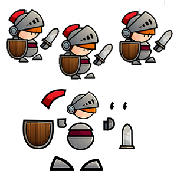
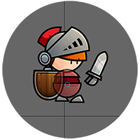
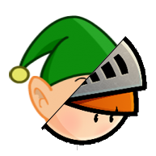

|
Vectorial Animation VS Tradicional Spritesheet
Animation is traditionally done by drawing the same object in its varis positions, this technique requires a lot of work and the end result usually are animations that are not fluid, due to the amount of drawings made these animations are also quite large, an alternative is vector animation as is used in Ganimator, we draw instead of complete objects, we only draw object parts separately and then animate using vectors over time, the end result is a flowable and easily edit animation. |
 |
|  |
Editable Atributes
In Ganimator the attributes that can be animated are image size, transparency, position, rotation and point of origin image that influences how the image will rotate. There are other attributes that can be animated, and may in the future be added to Ganimator, for example FFD (Free form deformation) that lets you animate objects deforming parts of the image (example only stretch the nose of a character in an image), change dynamic form the image assigned to an object or particle effects. |
|
Vectorial Animation are reusable
One of the best things in vector animation is able to reuse animations previously made to new characters, changing only the various images that composes the character of this animation, we can easily reuse animations created already for several characters. |
 |
|
Time based asynchronous animation
In ganimator animations are recorded on a time base (second), through well-defined points, which we call keyframes, frames that do not set are generated from the keyframes through linear interpolation (uniformly) of all the attributes that define the over time, the various objects inside an animation work asynchronously, i.e. not all working on the same time scale can vary from each other animation duration, or the animation object is in a loop or not. |